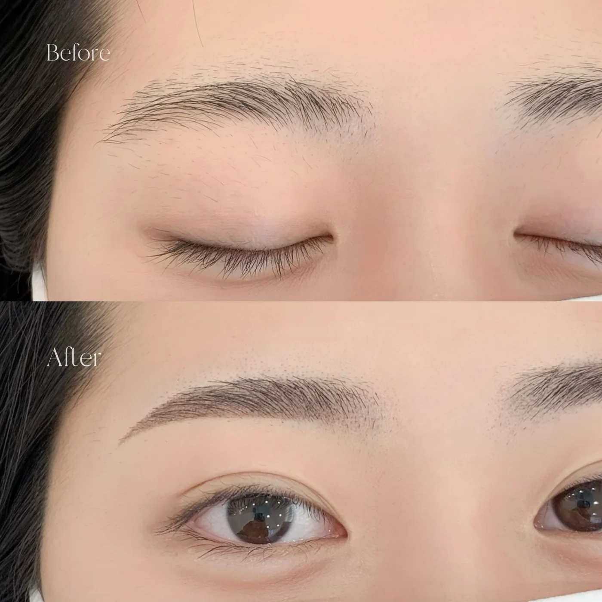
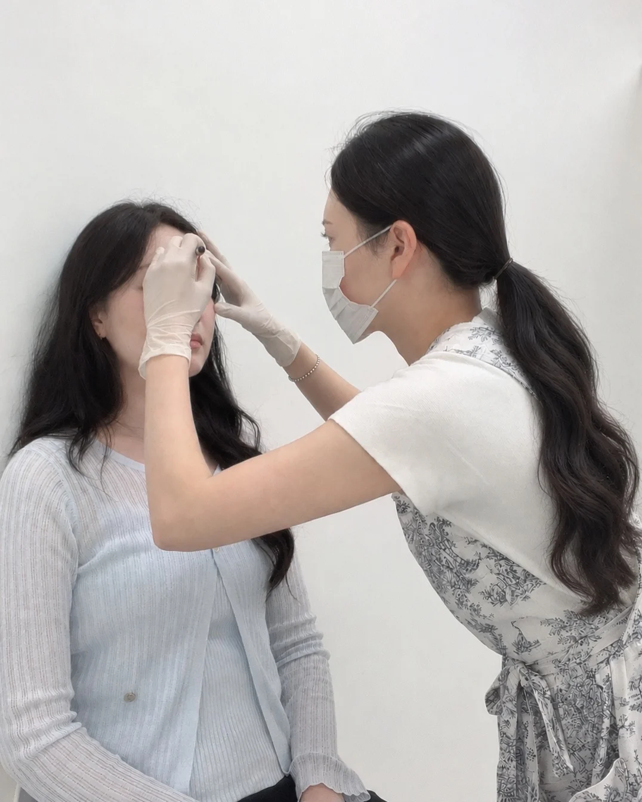
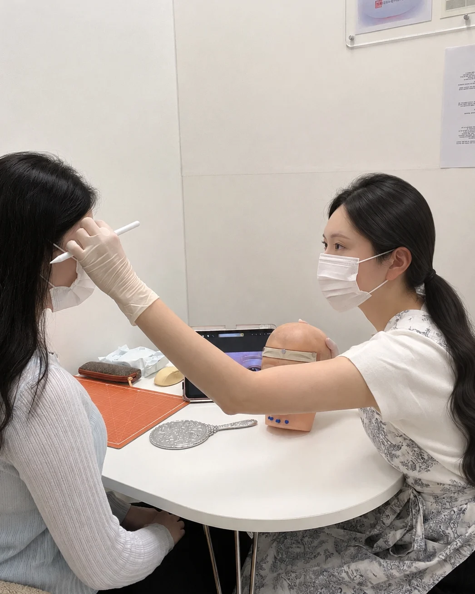
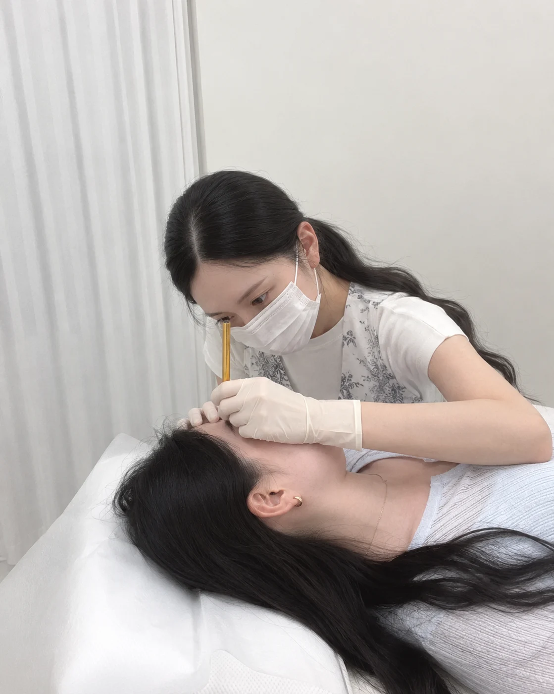
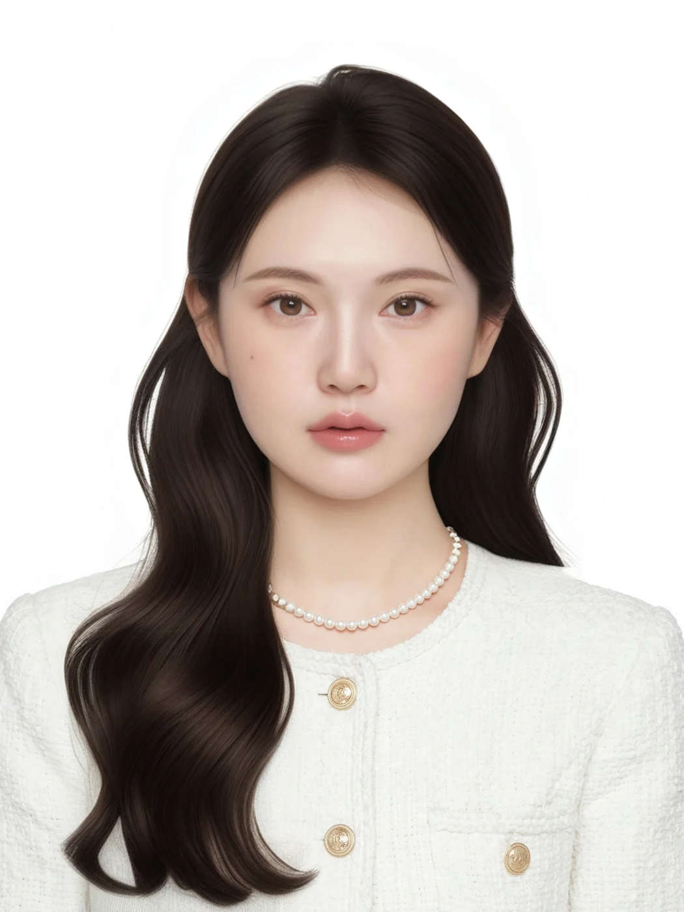
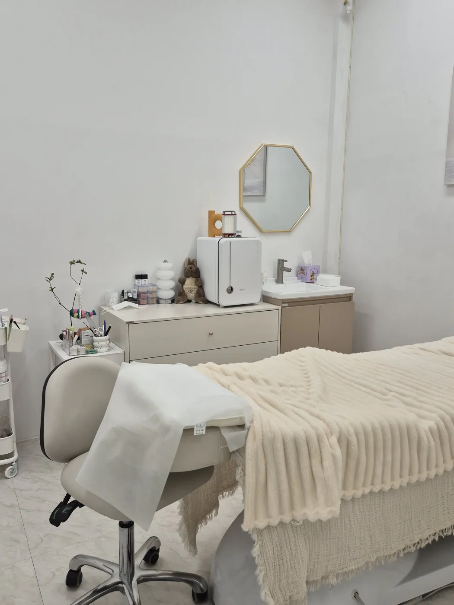
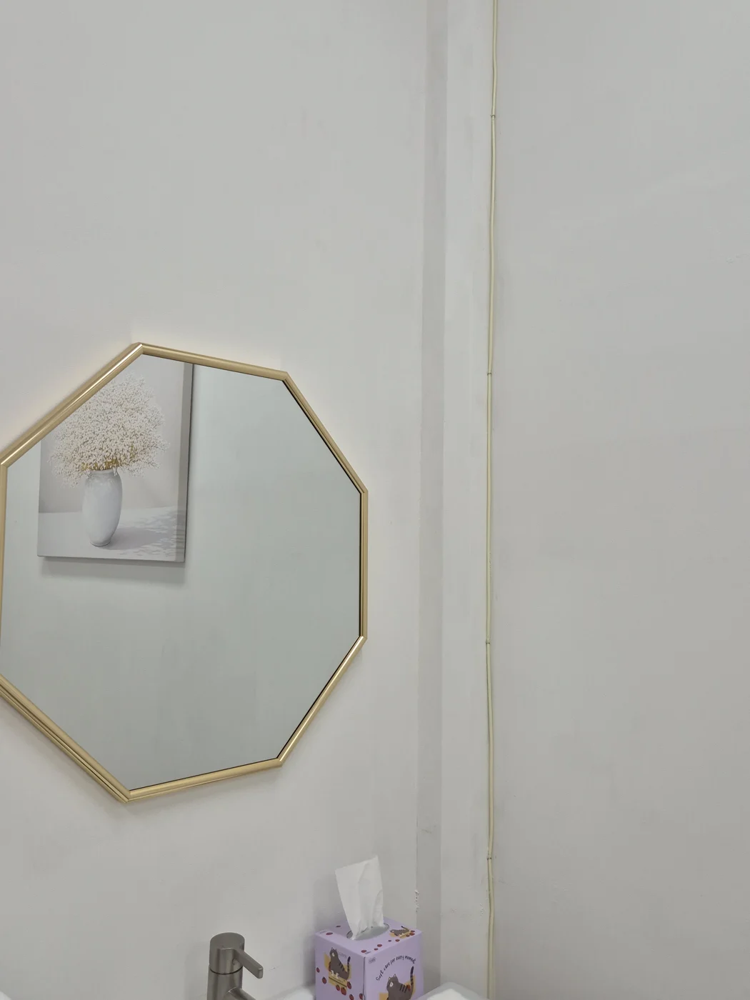
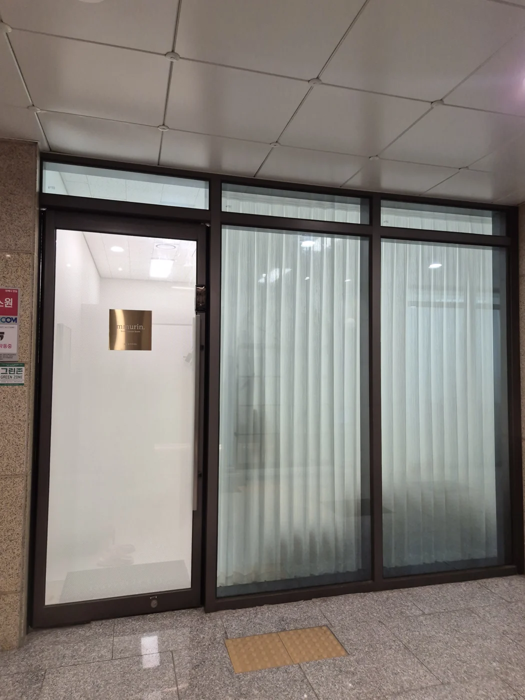

매일 그려도
양쪽이 달라 보여요.
빈 부분을 채우고 모양을 맞추느라
아침마다 생각보다 시간이 걸려요.
MMURIN · PANGYO BROW STUDIO
대표원장 1:1 맞춤 디자인부터 리터치까지.
자연스러운 변화를 뮤린에서 만나보세요.
SIGNATURE BROW PROGRAM
사전 상담 · 맞춤 디자인 · 대표원장 시술
상담 · 예약
THE APPROACH
눈매와 얼굴형, 본래 눈썹의 흐름.
같은 모양도 사람마다 다르게 어울리니까요.
뮤린은 평소의 메이크업과 원하는 분위기를 먼저 듣고,
얼굴에 자연스럽게 어울리는 디자인을 함께 찾습니다.
시술 전 스케치를 확인하는 시간도 충분히 갖습니다.
YOUR EVERYDAY, YOUR BROW
빈 부분을 채우고 모양을 맞추느라
아침마다 생각보다 시간이 걸려요.
화장하지 않은 얼굴에도
부담 없이 어울리면 좋겠어요.
바로 시술하기보다 이야기 나누고
디자인을 먼저 확인하고 싶어요.
그래서 뮤린은, 상담부터 시작합니다.
WHAT I DO
정해진 눈썹을 그리기보다
당신에게 맞는 디자인을 찾는 시간.
기존 눈썹과 잔흔, 평소의 고민을 먼저 확인합니다.
얼굴형과 눈매, 원하는 느낌을 스케치에 반영합니다.
상담부터 디자인, 시술까지 대표원장이 직접 진행합니다.
시술 후 관리 방법과 포함된 리터치 과정을 안내합니다.



BEFORE & AFTER
한 사람마다 다른 눈썹, 다른 아름다움.
실제 사례로 변화를 확인해보세요.
사진을 누르면 크게 볼 수 있어요. 시술 결과는 개인에 따라 다를 수 있습니다.
YOUR BROW JOURNEY
각 단계에서 당신의 이야기를 듣고 함께 확인합니다.
밝은 곳에서 찍은 눈썹 사진과 고민을 카카오톡으로 보내주세요.
사전 상담을 마친 후 가능한 날짜와 방문 안내를 확인합니다.
기존 눈썹과 원하는 분위기, 평소 메이크업을 함께 살펴봅니다.
얼굴에 어울리는 모양을 먼저 그려보고 함께 확인합니다.
확인한 디자인을 바탕으로 1:1 시술하고 관리 방법을 안내합니다.
리터치의 시기와 적용 조건을 확인하고 이후의 일정을 상담합니다.
QUESTIONS, ANSWERED
원하는 분위기나 평소 메이크업을 편하게 알려주세요. 얼굴형과 눈매, 기존 눈썹의 흐름을 확인하고 함께 디자인을 정합니다.
기존 잔흔과 현재 눈썹 상태를 먼저 확인해야 합니다. 카카오톡으로 밝은 곳에서 찍은 눈썹 사진을 보내주시면 상담을 안내해드립니다.
원하는 느낌을 상담에서 충분히 이야기해주세요. 본래 눈썹과 얼굴의 조화를 살펴 디자인을 먼저 확인합니다. 참고 사진이 있다면 함께 보내주셔도 좋습니다.
사전 상담과 맞춤 디자인, 시술과 리터치가 포함됩니다. 기존 시술 상태와 리터치 세부 조건은 상담에서 안내드립니다.
뮤린은 100% 예약제로 운영합니다. 카카오톡 채널 ‘뮤린브로우’로 문의해주시면 사전 상담 후 가능한 방문 일정을 안내해드립니다.
자연눈썹 디자인 가격에 리터치가 포함되어 있습니다. 진행 시기와 적용 조건은 예약 상담 시 자세히 안내해드립니다.
힐스테이트 판교역 판매·상업시설 주차장을 이용하시면 무료주차 3시간을 지원합니다. B4층에 주차 후 24번 엘리베이터를 이용해주세요.
CLIENT STORIES
네이버 플레이스에서 실제 고객의 리뷰와 방문 사진을 확인하실 수 있어요.
A LITTLE MORE CARE
상담하고, 디자인을 확인하고, 관리 방법을 안내하는 일.
뮤린은 그 모든 과정이 시술의 일부라고 생각합니다.
한 번의 만남 이후에도 궁금한 점이 있다면
카카오톡으로 편하게 이야기해주세요.
IS MMURIN RIGHT FOR YOU?
AFTERCARE INCLUDED
자연눈썹 디자인 15만원에 리터치가 포함됩니다.
관리 방법과 리터치 일정은 상담 시 자세히 안내드려요.

mmurinA NOTE FROM THE DIRECTOR
저 역시 눈썹 시술의 아쉬움을 경험한 적이 있어요.
그래서 처음 방문하시는 분의 기대와 걱정을
조금 더 깊이 이해하고 있습니다.
정해진 모양을 그리기보다, 당신의 얼굴과 일상에
자연스럽게 어울리는 디자인을 함께 찾고 싶습니다.
한 분, 한 분을 위한 공간에서 편안하게 이야기 나눠요.
SIGNATURE PROGRAM
사전 상담부터 디자인, 시술과 리터치까지.
뮤린에서 당신의 눈썹을 만나보세요.
BEFORE YOUR VISIT
눈썹 사진을 먼저 보내주세요.현재 상태가 잘 보이는 밝은 사진이면 상담에 도움이 됩니다.
기존 시술이 있다면 알려주세요.남아 있는 잔흔을 확인한 후 상담을 진행합니다.
예약 시간과 방문 안내를 확인해주세요.100% 예약제로 운영합니다. 일정 변경은 카카오톡으로 문의해주세요.
개인별 상태는 상담에서 확인합니다.시술 가능 여부와 관리·리터치 조건은 사전 상담 시 안내드립니다.
LET’S FIND YOUR NATURAL BEAUTY
현재 눈썹 사진과 원하는 분위기를 보내주세요.
뮤린이 먼저 이야기를 듣겠습니다.
A QUIET MOMENT, JUST FOR YOU
판교역에서 가까운, 조용한 1:1 프라이빗 스튜디오.



도보판교역 3번 출구 앞 횡단보도를 건너 직진하세요. 버거옥과 일타폰 사이로 들어와 아케이드 7번 게이트를 이용한 뒤, 에스컬레이터를 타지 않고 아로마너스 오른쪽으로 이동해주세요.
차량힐스테이트 판교역 판매·상업시설 주차장 B4층 기둥 23~27번 근처에 주차 후 24번 엘리베이터를 이용해주세요.